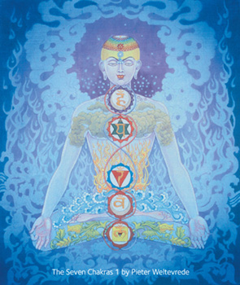
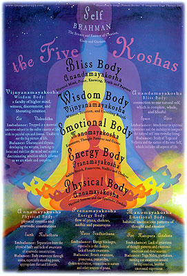

The Five Koshas & The Five Kleshas

1.
Muladhara--base/sacral
chakra--red--mantra: lum
2.
Svadisthana--belly
chakra--orange--mantra: vum
3.
Manipura--solar plexus
chakra--yellow--mantra: rum
4.
Anahata--heart
chakra--green--mantra: yum
5.
Vishuddha--throat
chakra--blue--mantra: hum
6.
Ajna--third eye
chakra--indigo--mantra: om
7.
Sahasrara--crown
chakra--white--no mantra

1. Physical body--Annamayakosha
2. Energy body--Pranamayakosha
3. Emotional body--Manomayakosha
4. Wisdom body--Vijnyanamayakosha
5. Bliss body--Anandamayakosha
(Kosha means sheath--the above are the five koshas.)
*
*
THE KLESHAS
The kleshas
are outlined in the classical
text The Yoga Sutras of
Patanjali as the
obstacles to the practice of
yoga and as such they hold
us back from the final aim of
practice which is to attain
Enlightenment. In the case of
the kleshas what we are learning
about here is all that holds us
back from the Enlightenment
experience. Understanding the
kleshas may help us uncovering
our inner demons, and bringing
them out into the light for
analysis. We all have the same
difficulties to face on our path
– at root the human condition
(what Buddhism would call
suffering and the manifestations
of suffering) are key
‘difficulties’ or obstacles (the
kleshas) they simply manifest in
different ways and scenarios
depending on the context.
‘The obstacles and stumbling
blocks on the path towards
Realization can easily be
overcome once an intelligent and
comprehensive understanding of
them has been reached. It
should always be borne in mind
that failures are but stepping
stones to success’ Swami Vishnu-Devananda
So what are the five kleshas and how can they be overcome? Let’s go through them:
AVIDYA – This klesha
is sometimes described as
‘ignorance’ but perhaps we may
better think of it as ‘mis-knowing’.
Ignorance implies a lack of
understanding, whereas mis-knowing
implies a wilful
misunderstanding. We are not
innocent victims in this
ignorance, most of us choose not
to use our initiative to find
out who we really are.
Avida is the constant reference
to ourselves as the body and the
mind without much of an
understanding that we have the
capacity to move beyond this.
Most of us are very attached to
our bodies and our minds and see
these facets of the self as
defining who we are. Yoga
teaches us we are so much more.
We even have an expression in
our culture of ‘losing my mind’
which has a very negative
connotation. In yoga we want to
transcend the mind. So avidya
is summarised as a mis-knowing
of who we truly are. Believing
we are defined by the body or
the mind when in fact when we
really ask ‘who am I?’ the only
authentic answer is ‘I am the
primordial Self’ – not ‘I am
Katie’ or ‘I am a mother’ or ‘I
am happy’, but just ‘I AM’.
ASMITA – Asmita arises
when we see ourselves as
separate and divided from the
rest of the world. It’s a
perception which is very
self-oriented and ego bound.
We focus on ‘I, Me and Mine-ness’.
Perhaps it is our job or our
clothing or our cultural
background that we feel defines
us but whatever it is becoming
attached to these definitions
will hold us back from progress
on the spiritual path. Asmita
can also present as becoming
very competitive. When we find
that we want to be the best
unconditional love is the remedy
for this. When we experience
unconditional love we let go of
judging ourselves and others and
we are able to be kind and
compassionate, seeing the true
nature of reality is that WE ARE
ALL ONE, and there is no
separation between us.
Therefore there is no need for
competition or comparison.
RAGA – attraction and attachment to pleasure. The problem with being attracted to pleasurable things is that they are usually impermanent and when the person / situation / mental state we are so enjoying changes we experience suffering. Therefore pleasure in the worldly sense is ultimately unsatisfactory and will not lead us to happiness and joy in the everlasting sense. We all have deep attachments, for example as the mother of a newborn baby and I experience deep attachment to my little babe. What is important is for me to remember that he is not ‘mine’. How can we work on letting go of attachment to pleasure? Perhaps in our asana practice we can challenge ourselves to pursue postures we find more challenging or less enjoyable, We can aim to practice these postures with an attitude of equanimity in order that we are able to move beyond only doing postures or practice that we are drawn to. David Life (from Jivamukti Yoga) points out that if we only ever do things that we ‘like’ and avoid that which we find challenging or don’t feel like doing we will stay the same. The yogi wishes not to stay the same but to keep growing and evolving.
DVESHA - closely linked to RAGA, DEVESHA is aversion to the unpleasant (running away from uncomfortable feelings and experiences). Transformation comes by letting go of attachment to preferences. When we move beyond raga and dvesha we move into a place of equanimity where we are less reactive and more creative in our responses to life’s ups and downs. We will of course still experience emotions but in a much more mindful and balanced way, rather than the roller-coaster of ups and downs that present through raga and devesha.
ABHINIVESHA – this is the root of all the other kleshas and is the hardest to break. At the core of our hesitancy in life is fear and abhinivesha explains why we often avoid risk or why we act with little courage. Abhinivesha is often described as ‘fear of death’ and whilst it certainly does describe a fear of the death of the physical body, it also describes the fear of loss, which comes with all the ‘mini-deaths’ we experience in life. The end of youth, the end of a job, and the end of a relationship could all be described as ‘mini deaths’. We cling onto these phenomenon because we are scared of the unknown. We cling to life because we fail to perceive the seamless continuity of consciousness, which cannot be broken by death. If we truly believed in Enlightenment potential within ourselves there would be no fear of death because we would know ‘I am not my body’.
So how do we address the practice of overcoming the kleshas in everyday life? We need to keep in mind that the formal yoga class is in itself a bit of a bubble outside of our everyday lives. It’s important that our yoga practice extends into everything we think, say and do. However the formal part of the practice gives us an opportunity to do exactly that – practice – so that our life ‘off the mat’ might be as non-judgemental and compassionate as possible and in this way the life of a being moving away from the kleshas and towards Enlightenment. I also remember David Life’s comments when we left (Jivamukti Yoga) teacher training were very useful … that teacher training happens in a secluded and conducive environment, and that attachment to these ideal conditions for practice is unhelpful. Everyday life may not provide us with what we perceive as ideal conditions but we must remember that everyday life is our opportunity for practice, it’s where we really discover if our practice is working.
One very
potent way to overcome the
kleshas is through intention.
The yogi knows the power of
intention and simply keeping in
mind the intention to practice
and live free from these
obstacles will hold enormous
power. Regular practice is
another method – cultivating the
tapas (fire and enthusiasm) to
sustain your practice over time
so that it might help you move
beyond the binds of the kleshas.